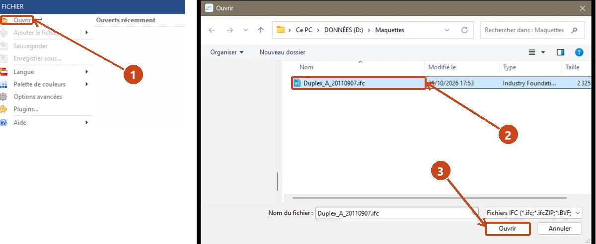
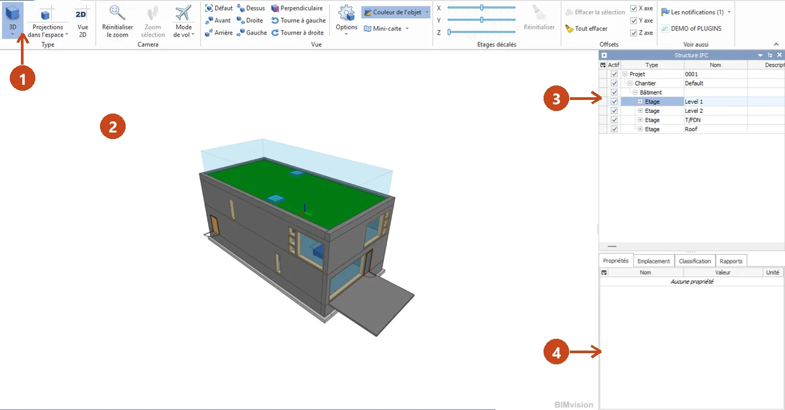
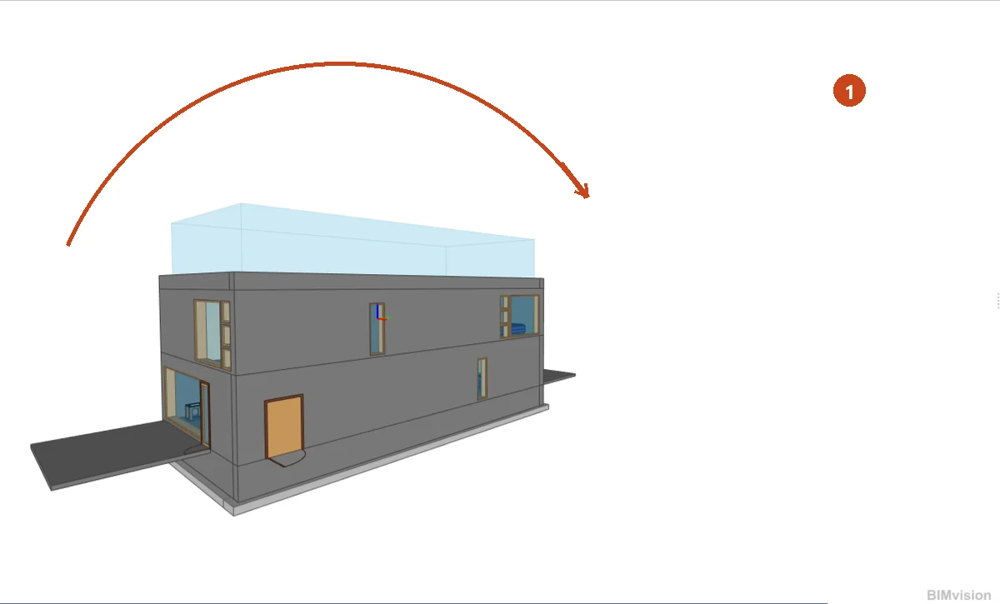
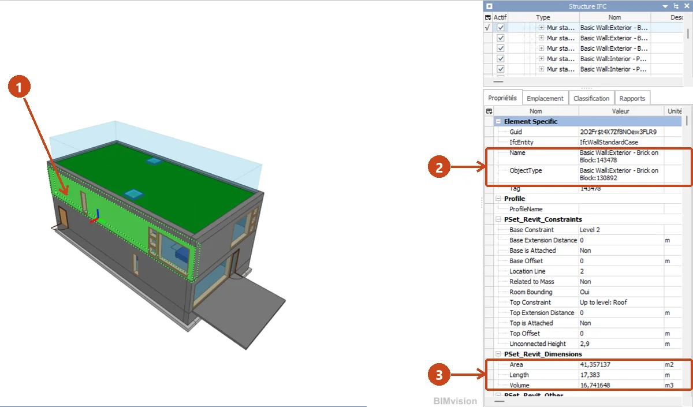
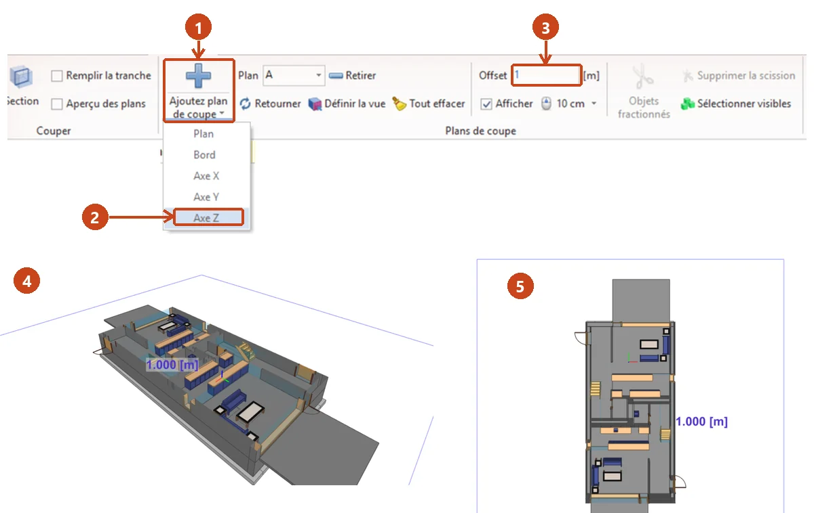

⬅ La ligne Lire les plans · tronc commun · 1re année
Gare 9 — La maquette BIM : initiation BIM Vision
Bienvenue en gare
Le bâtiment existe aussi en version numérique : la maquette BIM. Cette gare se fait sur ordinateur, avec BIM Vision ouvert (environ 2 h, test compris ; la fiche de TP prend 1 h 30). Chaque geste est montré sur une vraie capture du logiciel. À la fin, vous saurez :
- dire ce qu'est une maquette numérique et un fichier IFC ;
- ouvrir une maquette, la tourner, la regarder de dessus et de face ;
- lire la structure IFC : les étages, et ce qu'ils contiennent ;
- cliquer un élément pour lire sa fiche : dimensions, épaisseur, matériaux ;
- masquer un étage, couper la maquette, mesurer une surface et une longueur.
Gardez la fiche de TP à côté du clavier : vous y notez ce que vous lisez dans la maquette.
La maquette numérique : plus qu'un dessin
Le BIM (« bâtiment et informations modélisées ») : le bâtiment entier est construit dans l'ordinateur, en 3D. Chaque mur, chaque porte y existe avec ses informations : matériau, dimensions, étage.
Un plan montre le bâtiment. La maquette donne en plus la fiche de chaque élément : on clique une cloison, sa fiche s'affiche.
Sur les chantiers, la maquette sert à voir le bâtiment avant de le faire, à repérer les conflits entre corps de métier (une gaine qui traverse votre cloison) et à compter les quantités.
IFC et BIM Vision
- IFC : le format d'échange des maquettes. Quel que soit le logiciel de l'architecte, il exporte un fichier .ifc que tout le monde peut ouvrir.
- BIM Vision : un logiciel gratuit qui ouvre les fichiers IFC. Il ne dessine pas, il sert à lire la maquette. C'est l'outil de cette gare.
Vous n'avez pas à dessiner de maquette. Vous apprenez à la consulter, comme vous lisez un plan que vous n'avez pas dessiné.
À télécharger
- BIM Vision 3.2.1 : la dernière version (55 Mo). Elle demande Windows 10 et une carte graphique récente (OpenGL 4.6).
- BIM Vision 2.29.0 : la dernière version 2 (44 Mo), pour un PC plus ancien.
- La maquette d'exemple : un petit immeuble de deux logements sur deux niveaux, au format IFC (2,4 Mo). Toute la gare et la fiche de TP se font sur elle.
BIM Vision est gratuit ; les deux liens mènent au serveur de son éditeur, Datacomp. Maquette : BSI (2020) Duplex Apartment Test Files, buildingSMART International, licence CC BY 4.0, fichier non modifié.
Les captures de cette gare viennent de BIM Vision 3.1.2 en français. Si les menus de votre BIM Vision sont en anglais : cliquez « FILE », puis « Language », puis « Français ». Le logiciel redémarre en français.
Geste 1 : ouvrir la maquette

- Cliquez « FICHIER », en haut à gauche, puis « Ouvrir ».
- Allez dans le dossier où vous avez enregistré la maquette. Cliquez le fichier Duplex_A_20110907.ifc.
- Cliquez le bouton « Ouvrir ». La maquette s'affiche en 3D après quelques secondes.
La prochaine fois, la maquette est rangée dans FICHIER, liste « Ouverts récemment ».
L'écran de BIM Vision

- Le ruban : les boutons, rangés par onglets. Vous servez surtout d'AFFICHAGE, SECTIONS et MESURE.
- La vue 3D : le bâtiment. La toiture est végétalisée, d'où sa couleur verte.
- La structure IFC : la liste des étages et de tout ce qu'ils contiennent.
- Les propriétés : la fiche de l'élément que vous cliquez.
Geste 2 : tourner, zoomer, se déplacer

| Geste | Souris | Ce que ça fait |
|---|---|---|
| Tourner | clic gauche maintenu, puis glisser (1) | vous tournez autour du bâtiment : toutes les vues de la gare 2, l'une après l'autre |
| Zoomer | molette | vous approchez ou vous reculez, comme le zoom de la gare 4 |
| Se déplacer | molette enfoncée, puis glisser | vous faites glisser la vue sans tourner |
Perdu dans l'espace ? Onglet AFFICHAGE, groupe Camera : Réinitialiser le zoom recadre toute la maquette au centre de l'écran.
Geste 3 : les vues Dessus et Avant

Onglet « AFFICHAGE », groupe Vue :
- « Dessus » : la maquette vue d'en haut, comme la vue de dessus de la gare 2.
- « Avant » : la façade, vue de face, comme une élévation.
Arrière, Droite et Gauche donnent les autres faces. « Défaut » revient à la vue 3D du départ.
Geste 4 : la structure IFC, étage par étage

La structure IFC range la maquette en étages. Ici, quatre étages, nommés en anglais par le logiciel de l'architecte : Level 1 (rez-de-chaussée), Level 2 (étage), T/FDN (fondations) et Roof (toiture).
- Cliquez la ligne d'un étage : il s'allume en vert dans la vue. Le petit + devant la ligne la déplie.
- Un étage déplié montre ses familles : Pièces, Murs, Dalles, Fenêtres, Portes, Escaliers…
- Dans les propriétés, la ligne Elevation donne l'altitude du plancher de l'étage, en mètres.
Exemple résolu
Je clique la ligne Etage Level 1. Je lis Elevation : 0 m. Le plancher du rez-de-chaussée est à l'altitude 0.
Geste 5 : compter les éléments d'une famille

- Dépliez un étage, puis une famille, par exemple « Portes ». Chaque ligne est un élément : une ligne, une porte.
Exemple résolu
Je déplie Level 1, puis Portes. Je compte 6 lignes. Le rez-de-chaussée a 6 portes, pour les deux logements.
Geste 6 : cliquer un élément, lire sa fiche

- Cliquez un élément dans la vue 3D : il s'allume en vert.
- Le panneau Propriétés affiche sa fiche. Name donne son type : ici un mur extérieur en brique sur bloc béton.
- Le groupe PSet_Revit_Dimensions donne ses dimensions.
Les propriétés sont en anglais. Les mots utiles de la gare :
| Propriété | En français |
|---|---|
| Name | nom, type de l'élément |
| Length | longueur (m) |
| Unconnected Height | hauteur du mur (m) |
| Area | surface (m²) |
| Width | épaisseur du mur (m) |
| Elevation | altitude d'un étage (m) |
| LayerThickness | épaisseur d'une couche (m) |
| Material | matériau |
Exemple résolu
Je clique le grand mur de façade de l'étage, face à moi dans la vue Défaut. Je lis Length : 17,383 m, et plus haut, Unconnected Height : 2,9 m. Ce mur mesure 17,383 m de long et 2,9 m de haut.
Geste 7 : l'épaisseur et les couches d'un mur

- L'épaisseur du mur : descendez le panneau Propriétés avec son ascenseur jusqu'au groupe PSet_Revit_Type_Construction. La ligne Width donne l'épaisseur totale : 0,417 m pour ce mur.
- Les couches : dans la structure IFC, cliquez le petit + devant le mur, puis devant la ligne IfcMaterialLayerSet. Chaque ligne en dessous est une couche du mur, dans l'ordre.
- Cliquez une couche : LayerThickness donne son épaisseur, Material Name son matériau.
Exemple résolu
Je clique la première couche du mur extérieur. Je lis LayerThickness : 0,092 m, et Name : Masonry - Brick. La couche 1 est une brique de 0,092 m.
Geste 8 : masquer un étage

- Dans la colonne « Actif » de la structure IFC, décochez la case d'un étage : il disparaît de la vue. Décochez Level 2 et Roof : le rez-de-chaussée apparaît, ouvert par le haut, avec ses cloisons et ses escaliers.
Recochez les cases pour revoir tout le bâtiment.
Geste 9 : couper la maquette

Onglet « SECTIONS » :
- Cliquez la petite flèche sous « Ajoutez plan de coupe ».
- Choisissez « Axe Z », puis cliquez sur la façade du rez-de-chaussée. La maquette est coupée à l'endroit du clic.
- Tapez 1 dans la case « Offset », puis Entrée : la coupe passe à 1 m du sol.
- La maquette coupée se regarde en 3D, pièce par pièce.
- Onglet « AFFICHAGE », vue « Dessus » : vous obtenez le plan du niveau, coupé à 1 m comme à la gare 4.
Axe X ou Axe Y donnent une coupe verticale. Retourner change le côté gardé. Pour retirer la coupe : onglet « SECTIONS », « Tout effacer ».
Le plan de niveau du dossier est coupé à 1 m une fois pour toutes. Dans la maquette, vous choisissez la hauteur de coupe.
Geste 10 : mesurer une surface et une longueur

Si une coupe est en place, retirez-la d'abord : onglet « SECTIONS », « Tout effacer », puis vue « Défaut ».
Onglet « MESURE ». Cochez d'abord Ignorer transparents : sinon le clic prend le volume bleu transparent posé sur le toit.
- « Surface » (le bouton affiche « Surface : Même plan ») : cliquez une face. Sa surface s'affiche, en m².
- « Longueur », petite flèche, « Arête » : cliquez une arête. Sa longueur s'affiche, en m.
- Le résultat s'affiche dans la vue et dans la case Résultat. Effacer mesures remet à zéro.
Exemple résolu
Mode Surface, je clique la toiture verte : 132,926 m². Mode Arête, je clique l'arête verticale de l'angle vitré du rez-de-chaussée : 3,100 m. C'est la hauteur d'un étage.
La maquette et les plans
Le chantier vous donne les deux : la maquette et les plans PDF. Passer de l'un à l'autre est la compétence finale de cette gare :
- retrouver dans la maquette la pièce que montre un plan ;
- vérifier sur la maquette un doute du plan, et inversement ;
- orienter la maquette comme le plan (le nord de la gare 4).
La règle de la gare 3 vaut aussi pour la maquette : elle a ses versions. On travaille sur la maquette à jour.
Le test de la gare
Répondez à tout, votre score s'affiche en bas. Les deux dernières questions regardent vers votre métier.
Terminus de la gare 9
Avec ces dix gestes, la maquette est devenue un document de plus dans votre dossier technique.
📄 Télécharger la fiche de TP (PDF)
Pour l'enseignant : corrigé dans l'espace enseignant, sous code. La fiche se remplit sur poste, BIM Vision ouvert sur la maquette d'exemple : vocabulaire, gestes à valider, valeurs lues dans la maquette, coupe et mesures.
Prochaine gare : le sujet guidé, un vrai sujet, accompagné question par question.